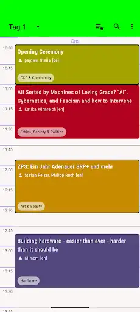

Winterkongress 2026 Schedule
إنتاجية ومهام
Winterkongress 2026 Schedule Winterkongress of digital society on February 20 and 21 2026 Winterkongress is a co-production of Rote Fabrik and digital society. We thank all supporters cordially! https://winterkongress.ch/2026/ App features View program by day and rooms (side by side) Custom grid lay
✓ ترخيص مفتوح (Apache-2.0) · آخر تحديث: 2026-04-29
1.0.3-DGWK-Editionالإصدار
10.7 MBالحجم
Apache-2.0الرخصة
Open in Kanzتحميل APK (10.7 MB)
Download APK
SHA-256: 5255dc1c32c4688afec530164d5bcc62e5189d2717e91f79952cb7e37e804ee2

امسح الكود لفتح صفحة التطبيق
Scan to open this app page
لو كنز مش متثبت عندك: نزّل متجر كنز.
Not installed? Get the Kanz store.